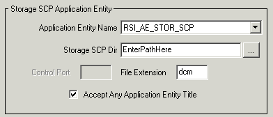

Storage is the process by which DICOM files are transferred from one DICOM device to another. In order to receive files, you need to specify a Storage SCP Application Entity for the machine that will store the files that are returned. This entity uses the Storage SCP Service, which listens at a TCP/IP port for incoming DICOM files and writes them to a defined disk directory.
Note: If you are running Windows XP service pack 2, you may need to modify your firewall settings in order to send and receive DICOM files. See Troubleshooting a Retrieval Operation for details.
To configure the Storage SCP Service parameters and an Application Entity, complete the following steps:
Open the DICOM Network Services utility in system configuration mode:
DICOMEX_NET, /SYSTEM
Note: The required Storage SCP Application Entity area is grayed out on the Configuration tab unless you start the DICOM Network Services utility using the SYSTEM keyword.
In the Storage SCP Application Entity area, configure Storage SCP settings for the machine on which the files will be stored.
|
 |
Note: You must define a valid directory for Storage SCP Dir in order for the Storage SCP service to function correctly.
|
Application Dir |
Accept the default value, IDL_AE_STOR_SCP or see Defining a New Application Entity to configure a new Application Entity. |
|
Storage SCP Dir |
Enter the full path to the directory location where the retrieved files will be located, or click the ... button to select or create the directory. Note: If multiple clients access a single installation of IDL, this file storage directory will be shared among all users. |
|
Control Port (UNIX only) |
Enter the port number the Storage SCP service listens at for control messages. Typically this value is one greater than the port number used by the Storage SCP Application Entity. The default for the control port value is 2511 (this is one greater than the default port number, 2510, for the default IDL_AE_STOR_SCP Application Entity). To change this value, you must:
If you fail to follow these steps to change the control port value, you may not be able to stop the service from the DICOM Network Services utility because the user interface and the service will not be using the same control port number. |
|
File Extension |
Accept the default dcm extension or enter the extension that will be appended to files. |
|
Accept Any Application Entity |
Check this box to allow the Storage SCP Service to accept files from any remote machine. Uncheck this box to accept files only from Application Entities defined in this dialog and stored in the system configuration file. When you uncheck this box, enter Application Entity information for each remote file source machine that will be queried and will send files to the directory defined by Storage SCP Dir . This information must exist in the system configuration file. See Configuring an Application Entity for information on configuring AEs. |
Note: Making changes in this dialog only affects characteristics of the local Storage SCP service Application Entity. It is not possible to change characteristics of remote SCP service nodes.
Make a note of the Storage SCP Application Entity information you have just configured. You will need to add this information on the device that will be queried for files. See Defining a Machine to Be Queried for instructions.
Tip: You can use the DICOMEX_GETSTORSCPDIR function to return the location of the directory associated with the DICOM Store SCP service. See DICOMEX_GETSTORSCPDIR for details.